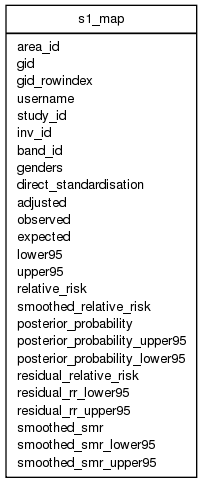

| Table: rif_studies.s1_map | |||
| Study 1 extract: No description | |||
| Size: medium, Select frequency: medium, Update frequency: medium | |||
| Columns | |||
| Name | Type | Constraints | Description |
| area_id | VARCHAR (300) | An area id, the value of the study geolevel; i.e. the value of the column T_RIF40_GEOLEVELS.GEOLEVEL_NAME in table T_RIF40_GEOLEVELS.LOOKUP_TABLE | |
| gid | INTEGER | Geographic ID (artificial primary key originally created by shp2pgsql, equals RIF40_GEOLEVELS.GEOLEVEL_ID after ST_Union() conversion to single multipolygon per AREA_ID) | |
| gid_rowindex | VARCHAR (2147483647) | GID rowindex record locator unique key | |
| username | VARCHAR (90) | Username | |
| study_id | INTEGER | NOT NULL | Unique study index: study_id. Created by SEQUENCE rif40_study_id_seq |
| inv_id | INTEGER | NOT NULL | Unique investigation inde:inv_id. Created by SEQUENCE rif40_inv_id_seq |
| band_id | INTEGER | NOT NULL | A band allocated to the area |
| genders | SMALLINT | NOT NULL | Genders to be investigated: 1 - males, 2 female or 3 - both |
| direct_standardisation | SMALLINT | NOT NULL | Standardisation: indirect (0) or direct (1) |
| adjusted | SMALLINT | NOT NULL | Covariate adjustment: Unadjusted (0) or adjusted (1) |
| observed | float8 (17, 17) | The number of observed cases | |
| expected | float8 (17, 17) | The number of expected cases or the rate (for direct standardised results) | |
| lower95 | float8 (17, 17) | The lower 95% confidence interval for the relative risk (for indirectly standarised results) or the lower 95% confidence interval for the rate (for directly standardised results) | |
| upper95 | float8 (17, 17) | The upper 95% confidence interval for the relative risk (for indirectly standarised results) or the upper 95% confidence interval for the rate (for directly standardised results) | |
| relative_risk | float8 (17, 17) | Relaitive risk (for indirectly standarised results) or NULL (for directly standardised results) | |
| smoothed_relative_risk | float8 (17, 17) | Smoothed relaive risk (for indirectly standarised results) or NULL (for directly standardised results) | |
| posterior_probability | float8 (17, 17) | The posterior probability (for indirectly standarised results) or NULL (for directly standardised results) | |
| posterior_probability_upper95 | float8 (17, 17) | The upper 95% confidence interval of the posterior probability (for indirectly standarised results) or NULL (for directly standardised results) | |
| posterior_probability_lower95 | float8 (17, 17) | The lower 95% confidence interval of the posterior probability (for indirectly standarised results) or NULL (for directly standardised results) | |
| residual_relative_risk | float8 (17, 17) | The residual relative risk(for indirectly standarised results) or NULL (for directly standardised results) | |
| residual_rr_lower95 | float8 (17, 17) | The lower 95% confidence interval of the residual relative risk(for indirectly standarised results) or NULL (for directly standardised results) | |
| residual_rr_upper95 | float8 (17, 17) | The upper 95% confidence interval of the residual relative risk(for indirectly standarised results) or NULL (for directly standardised results) | |
| smoothed_smr | float8 (17, 17) | The smoothed SMR [fully Bayesian smoothing] (for indirectly standarised results) or NULL (for directly standardised results) | |
| smoothed_smr_lower95 | float8 (17, 17) | The lower 95% confidence interval of the smoothed SMR [fully Bayesian smoothing] (for indirectly standarised results) or NULL (for directly standardised results) | |
| smoothed_smr_upper95 | float8 (17, 17) | The upper 95% confidence interval of the smoothed SMR [fully Bayesian smoothing] (for indirectly standarised results) or NULL (for directly standardised results) | |
| Primary key | |||
| Name | Columns | Description | |
| s3_map_pk | study_id, band_id, inv_id, genders, adjusted, direct_standardisation | ||
| Grants | |||
| Role | Actions | ||
| rif40 | select, references, insert, delete, update | ||
| peterh | select, insert | ||
